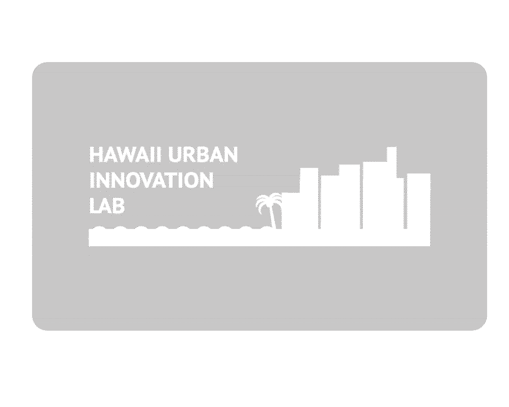
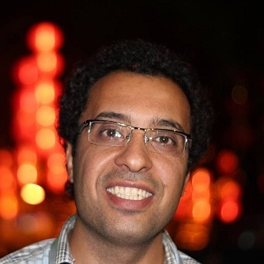
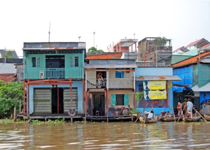
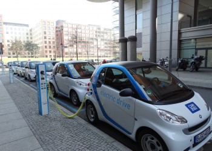
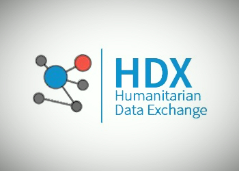

<!DOCTYPE html>
<html lang="en-US" style="overflow: hidden;">
<head>
    <script language="Javascript">
    <!--
    alert ("This webpage is an Archive of the former HUILab at the University of Hawaii at Manoa!")
    //-->
    </script>
<meta http-equiv="Content-Type" content="text/html; charset=UTF-8">

<meta charset="UTF-8">
<meta name="viewport" content="width=device-width, initial-scale=1">
<title>Hui.Lab | Hawai'i Urban Innovation Lab</title>
<link rel="profile" href="http://gmpg.org/xfn/11">
<link rel="pingback" href="http://www.huilab.net/xmlrpc.php">


<script>
  	jvcf7_loading_url= "http://www.huilab.net/wp-content/plugins/contact-form-7/images/ajax-loader.gif";
    jvcf7_invalid_field_design = "theme_1";
	jvcf7_show_label_error = "yes";
  </script><meta name="robots" content="noindex,follow">
<link rel="alternate" type="application/rss+xml" title="Hui.Lab » Feed" href="http://www.huilab.net/feed/">
<link rel="alternate" type="application/rss+xml" title="Hui.Lab » Comments Feed" href="http://www.huilab.net/comments/feed/">
<link rel="alternate" type="application/rss+xml" title="Hui.Lab » Home Page Comments Feed" href="http://www.huilab.net/sample-page/feed/">
		<script type="text/javascript">
			window._wpemojiSettings = {"baseUrl":"http:\/\/s.w.org\/images\/core\/emoji\/72x72\/","ext":".png","source":{"concatemoji":"http:\/\/www.huilab.net\/wp-includes\/js\/wp-emoji-release.min.js?ver=4.3.3"}};
			!function(a,b,c){function d(a){var c=b.createElement("canvas"),d=c.getContext&&c.getContext("2d");return d&&d.fillText?(d.textBaseline="top",d.font="600 32px Arial","flag"===a?(d.fillText(String.fromCharCode(55356,56812,55356,56807),0,0),c.toDataURL().length>3e3):(d.fillText(String.fromCharCode(55357,56835),0,0),0!==d.getImageData(16,16,1,1).data[0])):!1}function e(a){var c=b.createElement("script");c.src=a,c.type="text/javascript",b.getElementsByTagName("head")[0].appendChild(c)}var f,g;c.supports={simple:d("simple"),flag:d("flag")},c.DOMReady=!1,c.readyCallback=function(){c.DOMReady=!0},c.supports.simple&&c.supports.flag||(g=function(){c.readyCallback()},b.addEventListener?(b.addEventListener("DOMContentLoaded",g,!1),a.addEventListener("load",g,!1)):(a.attachEvent("onload",g),b.attachEvent("onreadystatechange",function(){"complete"===b.readyState&&c.readyCallback()})),f=c.source||{},f.concatemoji?e(f.concatemoji):f.wpemoji&&f.twemoji&&(e(f.twemoji),e(f.wpemoji)))}(window,document,window._wpemojiSettings);
		</script><script type="text/javascript" src="wp-emoji-release.min.js"></script>
		


<script type="text/javascript" src="jquery.js"></script>
<script type="text/javascript" src="jquery-migrate.min.js"></script>
<script type="text/javascript" src="waypoints.min.js"></script>
<script type="text/javascript" src="jquery.nicescroll.min.js"></script>
<script type="text/javascript" src="nicescroll-init.js"></script>
<script type="text/javascript" src="slick.min.js"></script>
<script type="text/javascript" src="carousel-init.js"></script>
<script type="text/javascript" src="jquery.prettyphoto.min.js"></script>
<script type="text/javascript" src="prettyphoto-init.js"></script>
<script type="text/javascript" src="jquery.sticky.js"></script>
<script type="text/javascript" src="scripts.js"></script>
<script type="text/javascript" src="jquery.fitvids.js"></script>
<meta name="generator" content="WordPress 4.3.3">
<link rel="canonical" href="http://www.huilab.net/">
<link rel="shortlink" href="http://www.huilab.net/">

<!--Plugin WP Toolbar Removal 2014.0816.0392 Active - Tag 74be16979710d4c4e7c6647856088456-->

<!--Site Optimized to Speedup Control Panel Minimize Memory Consumption with Disabled Toolbar-->

	<link rel="Shortcut Icon" type="image/x-icon" href="favicon1.ico">
	<link rel="apple-touch-icon" type="image/png" href="http://www.huilab.net/wp-content/uploads/2015/03/favicon1.ico">
	<!--[if lt IE 9]>
<script src="http://www.huilab.net/wp-content/themes/moesia/js/html5shiv.js"></script>
<![endif]-->
			
	

<link rel="stylesheet" type="text/css" href="index.css" media="all">
</head>
<body class="home page page-id-2 page-template page-template-page_front-page page-template-page_front-page-php custom-background siteorigin-panels siteorigin-panels-home su-other-shortcodes-loaded">
<div style="display: block;" id="page" class="hfeed site">
	<a class="skip-link screen-reader-text" href="#content">Skip to content</a>

								<header style="height: 821px;" id="masthead" class="site-header has-banner" role="banner">
				
							
													<div class="welcome-info">
									
																	<a href="#site-navigation" class="welcome-button wow bounceInUp" data-wow-delay="0.3s">Learn more</a>
							</div>
						</header><!-- #masthead -->
		<div style="height: 50px;" class="sticky-wrapper" id="undefined-sticky-wrapper"><div class="top-bar">
			<div class="container">
				<div class="site-branding col-md-4"><a href="http://www.huilab.net/" title="Hui.Lab"></a></div><button class="menu-toggle btn"><i class="fa fa-bars"></i></button>
				<nav id="site-navigation" class="main-navigation col-md-8" role="navigation"><div class="menu-main-menu-container"><ul id="menu-main-menu" class="menu nav-menu"><li id="menu-item-245" class="menu-item menu-item-type-custom menu-item-object-custom current-menu-item current_page_item menu-item-home menu-item-245"><a href="http://www.huilab.net/#panel-2-0-0-0">About</a></li>
<li id="menu-item-246" class="menu-item menu-item-type-custom menu-item-object-custom current-menu-item current_page_item menu-item-home menu-item-246"><a href="http://www.huilab.net/#services">Services</a></li>
<li id="menu-item-244" class="menu-item menu-item-type-custom menu-item-object-custom current-menu-item current_page_item menu-item-home menu-item-244"><a href="http://www.huilab.net/#employees">Team</a></li>
<li id="menu-item-247" class="menu-item menu-item-type-custom menu-item-object-custom current-menu-item current_page_item menu-item-home menu-item-247"><a href="http://www.huilab.net/#projects">Projects</a></li>
<li id="menu-item-248" class="menu-item menu-item-type-custom menu-item-object-custom current-menu-item current_page_item menu-item-home menu-item-248"><a href="http://www.huilab.net/#social">Connect</a></li>
</ul></div></nav></div></div></div>
						<div id="content" class="site-content clearfix ">
		
	<div id="primary" class="fp-content-area">
		<main id="main" class="site-main" role="main">

			<div class="entry-content">
				<div id="pl-2"><div class="panel-grid" id="pg-2-0"><div class="panel-grid-cell" id="pgc-2-0-0"><div class="so-panel widget widget_text panel-first-child panel-last-child container" id="panel-2-0-0-0"><div style="background-color: rgb(255, 255, 255); color: rgb(142, 142, 142);" class="panel-widget-style"><h3 class="widget-title">About Us</h3>			<div class="textwidget"><p>Both creating and responding to “the city of tomorrow” require new innovations. Conventional products and approaches oriented to only single consumers or markets must be replaced by integrated solutions that relate to whole urban systems. Future cities must master an innovation loop based upon a new relationship between information, resources, products, natural systems and users.</p>
<p>The primary mission of the Hawaii Urban Innovation (HUI) Lab is to identify, develop, and implement pilot projects that support the long-term transition of cities toward sustainable growth. Solutions will be developed by various stakeholders from industry, regional governments, community organizations, and departments within the University of Hawai'i System. Strong competence in collaborative strategic planning and implementation will be combined with specialized expertise in technological, natural and social systems in order to develop the city of tomorrow.</p>
<p>We aim to become the leading global alliance for planning and implementing systems-based sustainable urban solutions in cities around the world.</p>
</div>
		</div></div></div></div><div class="panel-grid" id="pg-2-1"><div class="panel-grid-cell" id="pgc-2-1-0">		<section id="services" class="services-area">
			<div class="container">
				<h3 class="widget-title"><span class="wow bounce">Services</span></h3>																			<div class="service col-md-4 col-sm-6 col-xs-6">
																				<span class="service-icon wow zoomInDown"><i class="fa fa-area-chart"></i></span>												<h4 class="service-title wow fadeInUp">HUI.Analytics</h4><div class="service-desc wow fadeInUp">HUI.Analytics offers a range of specialized descriptive, predictive, and prescriptive analytics models to help public and private clients meet urban challenges. HUI.Analytics offers proven solutions and expertise in urban data management and integration, and urban enterprise systems design, integration and support. As an urban intelligence consultant, HUI.Analytics provides innovative analytics with reporting tools for achieving valuable insights from structured, semi-structured, and unstructured urban data.</div>					</div>
																			<div class="service col-md-4 col-sm-6 col-xs-6">
																				<span class="service-icon wow zoomInDown"><i class="fa fa-cogs"></i></span>												<h4 class="service-title wow fadeInUp">HUI.R&amp;D</h4><div class="service-desc wow fadeInUp">HUI.R&amp;D is dedicated to conducting interdisciplinary basic and applied research on urban planning and smart city development to improve the quality of life in communities, cities, and urban regions. HUI.R&amp;D supports urban research dissemination and utilization and helps public and private sectors in new urban technology, solution, and service development from market research to prototyping and filed-test.</div>					</div>
																			<div class="service col-md-4 col-sm-6 col-xs-6">
																				<span class="service-icon wow zoomInDown"><i class="fa fa-university"></i></span>												<h4 class="service-title wow fadeInUp">HUI.Policy</h4><div class="service-desc wow fadeInUp">HUI.Policy supports citizen-centered policy research, and evidence-based participatory policy development. HUI.Policy aims to support public officials and community leaders by providing real-time urban data collection, elaboration and distribution solutions in urban policy evaluation and performance management. By establishing a citizen engagement platform, this lab is dedicated to promote Hawaiian culture and environmental preservation.</div>					</div>
																			<div class="service col-md-4 col-sm-6 col-xs-6">
																				<span class="service-icon wow zoomInDown"><i class="fa fa-group"></i></span>												<h4 class="service-title wow fadeInUp">HUI.Social</h4><div class="service-desc wow fadeInUp">HUI.Social is a platform to carry out social goals by disseminating research and development results. HUI.Social provides a social learning and development platform to ensure community building, partnership and development around new urban technologies and solutions. This lab also supports local government in community engagement and outreach using social audit and social media analytics.</div>					</div>
																			<div class="service col-md-4 col-sm-6 col-xs-6">
																				<span class="service-icon wow zoomInDown"><i class="fa fa-connectdevelop"></i></span>												<h4 class="service-title wow fadeInUp">HUI.Network</h4><div class="service-desc wow fadeInUp">HUI.Network is a collaborative innovation platform promoting active intellectual exchange and networking between scholars and public agencies, nonprofit organizations, and businesses. HUI.Network facilitates the diffusion and implementation of urban innovations by stimulating the exchange of knowledge, resources, and expertise between all stakeholders. HUI.Network also works as an urban technology and solution showcase supporting local business development and investments.</div>					</div>
																			<div class="service col-md-4 col-sm-6 col-xs-6">
																				<span class="service-icon wow zoomInDown"><i class="fa fa-graduation-cap"></i></span>												<h4 class="service-title wow fadeInUp">HUI.Ed</h4><div class="service-desc wow fadeInUp">HUI.Ed offers a suite of education programs in data-driven urban innovation planning and smart city development for undergraduate and graduate students as well as working professionals. Each program is developed in collaboration with industry leaders and leading faculty across the UH system. HUI.Ed aims at establishing a learning network for culture-base and civic engagement education as well as providing undergraduate internship, graduate research and post-doctorate opportunities.</div>					</div>
							</div>
									
		</section>		
	</div></div><div class="panel-grid" id="pg-2-2"><div style="background-image: url('cropped-oahu_from_air2.jpg');" class="panel-row-style"><div class="panel-grid-cell" id="pgc-2-2-0"><div class="so-panel widget widget_text panel-first-child container" id="panel-2-2-0-0">			<div class="textwidget"></div>
		</div><div class="so-panel widget widget_text panel-last-child container" id="panel-2-2-0-1">			<div class="textwidget"></div>
		</div></div></div></div><div class="panel-grid" id="pg-2-3"><div class="panel-grid-cell" id="pgc-2-3-0">
		<section id="employees" class="employees-area">
			<div class="container">
				<h3 class="widget-title"><span class="wow bounce">Our Team</span></h3>															<div class="employee col-md-4 col-sm-6 col-xs-6">
													
												<h4 class="employee-name wow fadeInUp">Dr. Dominik P.H. Kalisch</h4>
													<span class="employee-function wow fadeInUp">Executive Project Leader</span>
																			<span class="employee-position wow fadeInUp">Assistant Professor</span>
																			<span class="employee-department-affiliation wow fadeInUp">
								<a href="http://shidler.hawaii.edu/" target="_top">Shidler College of Business</a>
							</span>
												<div class="employee-desc wow fadeInUp"><p>Dominik’s research includes complex and big data analysis, studies of the interdependencies of urban systems, human environment interaction and habitat adaptation, and data driven policy support systems.&nbsp;In addition to data analysis, he has&nbsp;an interest in data visualization and mapping to provide deeper insight and understanding of the data. Dominick enjoys interdisciplinary teams and has an interdisciplinary background that ranges from education regarding social science, to engineering and computer science.</p>
</div>
													<div class="employee-social wow fadeInUp">
																	<a href="https://www.facebook.com/dominik.kalisch" target="_top"><i class="fa fa-facebook"></i></a>
																									<a href="http://twitter.com/dominikkalisch" target="_top"><i class="fa fa-twitter"></i></a>
																									<a href="https://google.com/+DominikKalisch" target="_top"><i class="fa fa-google-plus"></i></a>
																			
																	<a href="http://www.linkedin.com/in/dominikkalisch/" target="_top"><i class="fa fa-linkedin"></i></a>
																									<a href="mailto:dkalisch@hawaii.edu" target="_top"><i class="fa fa-envelope"></i></a>
																									<a href="http://www.kalisch.biz/" target="_top"><i class="fa fa-external-link"></i></a>
															</div>
											</div>
														<div class="employee col-md-4 col-sm-6 col-xs-6">
													
												<h4 class="employee-name wow fadeInUp">Dr. Makena Coffman</h4>
													<span class="employee-function wow fadeInUp">Coordinator Urban Planning</span>
																			<span class="employee-position wow fadeInUp">Associate Professor</span>
																			<span class="employee-department-affiliation wow fadeInUp">
								<a href="http://www.durp.hawaii.edu/" target="_top">Department of Urban and Regional Planning</a>
							</span>
												<div class="employee-desc wow fadeInUp"><p>Holding a&nbsp;B.A. in International Relations from Stanford University and a Ph.D. in Economics from the University of Hawaii at Manoa, Makena Coffman specializes in economic-environment modeling. She is also interested in&nbsp;environmental planning related to climate change mitigation and adaptation in the Asia/Pacific Region, energy and environmental policy, and planning methods which she also teaches in&nbsp;graduate courses.</p>
</div>
													<div class="employee-social wow fadeInUp">
																																			
																									<a href="mailto:makenaka@hawaii.edu" target="_top"><i class="fa fa-envelope"></i></a>
																							</div>
											</div>
														<div class="employee col-md-4 col-sm-6 col-xs-6">
													
												<h4 class="employee-name wow fadeInUp">Dr. Tung Bui</h4>
													<span class="employee-function wow fadeInUp">Coordinator Business</span>
																			<span class="employee-position wow fadeInUp">Professor - Chair &amp; Director</span>
																			<span class="employee-department-affiliation wow fadeInUp">
								<a href="http://shidler.hawaii.edu/" target="_top">Shidler College of Business</a>
							</span>
												<div class="employee-desc wow fadeInUp"><p>Tung is the director of the Shidler Executive MBA program in Vietnam both Hanoi and HCMC campuses, and the director of the APEC Study Center and the PRIISM institute. Bui has published 12 books and over 140 papers. His current research interests focus on effective management of large organizations, electronic commerce and supply chain management, sustainable development, and in collaborative technology, including group decision and negotiation support systems. In 1993, a research journal nominated him as “one of the most influential researchers in the field of decision support systems” based on citation.</p>
</div>
													<div class="employee-social wow fadeInUp">
																	<a href="https://www.facebook.com/tung.bui.39904" target="_top"><i class="fa fa-facebook"></i></a>
																																			
																	<a href="https://www.linkedin.com/profile/view?id=13938515" target="_top"><i class="fa fa-linkedin"></i></a>
																									<a href="mailto:tung.bui@hawaii.edu" target="_top"><i class="fa fa-envelope"></i></a>
																							</div>
											</div>
														<div class="employee col-md-4 col-sm-6 col-xs-6">
													
												<h4 class="employee-name wow fadeInUp">Dr. Kaveh Abhari</h4>
													<span class="employee-function wow fadeInUp">Coordinator Education</span>
																			<span class="employee-position wow fadeInUp">Senior Research Scientist</span>
																			<span class="employee-department-affiliation wow fadeInUp">
								<a href="https://coe.hawaii.edu/" target="_top">College of Education</a>
							</span>
												<div class="employee-desc wow fadeInUp"><p>Kaveh Abhari is an interdisciplinary researcher and data scientist at the University of Hawaii at Manoa. His research focuses on the implementation and integration of social technologies to spur education and innovation. He contributed to several interdisciplinary studies on the application of data-driven modeling in the fields of education, innovation management, and business administration. Kaveh is an electrical engineer with an interdisciplinary PhD in communication and information sciences.</p>
</div>
													<div class="employee-social wow fadeInUp">
																	<a href="https://www.facebook.com/kaveh.abhari" target="_top"><i class="fa fa-facebook"></i></a>
																									<a href="https://twitter.com/KavehAb" target="_top"><i class="fa fa-twitter"></i></a>
																									<a href="https://plus.google.com/+KavehAbhari/posts" target="_top"><i class="fa fa-google-plus"></i></a>
																			
																	<a href="https://www.linkedin.com/in/kavehabhari" target="_top"><i class="fa fa-linkedin"></i></a>
																									<a href="mailto:kabhari@hawaii.edu" target="_top"><i class="fa fa-envelope"></i></a>
																							</div>
											</div>
														<div class="employee col-md-4 col-sm-6 col-xs-6">
													
												<h4 class="employee-name wow fadeInUp">Dr. Debora J Halbert</h4>
													<span class="employee-function wow fadeInUp">Coordinator Political Science</span>
																			<span class="employee-position wow fadeInUp">Associate Professor - Chair</span>
																			<span class="employee-department-affiliation wow fadeInUp">
								<a href="http://www.socialsciences.hawaii.edu/" target="_top">Dept. of Political Science</a>
							</span>
												<div class="employee-desc wow fadeInUp"><div class="profile-box">
<p>Debora’s research activities&nbsp;involve issues of intellectual property law and policy with global and domestic implications. Her research activities cross many disciplines including political science, communication, cultural studies, and law. Her&nbsp;primary scholarship has been on issues of copyright&nbsp;but&nbsp;she<span style="line-height: 1.5;">&nbsp;also has an interest in feminism and technology. Aside from her&nbsp;ongoing work on intellectual property issues, Debora has researched issues of expatriatism, radical public spheres, and environmental issues.</span></p>
</div>
</div>
													<div class="employee-social wow fadeInUp">
																																			
																									<a href="mailto:halbert@hawaii.edu" target="_top"><i class="fa fa-envelope"></i></a>
																							</div>
											</div>
														<div class="employee col-md-4 col-sm-6 col-xs-6">
													
												<h4 class="employee-name wow fadeInUp">Dr. Reza Ghorbani</h4>
													<span class="employee-function wow fadeInUp">Coordinator Engineering</span>
																			<span class="employee-position wow fadeInUp">Associate Professor</span>
																			<span class="employee-department-affiliation wow fadeInUp">
								<a href="http://www.me.hawaii.edu/index.htm" target="_top">Dept. of Mechanical Engineering</a>
							</span>
												<div class="employee-desc wow fadeInUp"><p>Reza’s research includes sustainable energy production, energy efficiency in transportation, large-scale energy management, including smart grid and complex system optimization, design morphology, energy policy, and new technology adaptation and education. He is interested in&nbsp;sustainability, the human mind, curiosity, and problem-solving. He has multiple patents pending and holds&nbsp;international awards in robotics.</p>
</div>
													<div class="employee-social wow fadeInUp">
																																			
																	<a href="https://www.linkedin.com/profile/view?id=129935908" target="_top"><i class="fa fa-linkedin"></i></a>
																									<a href="mailto:rezag@hawaii.edu" target="_top"><i class="fa fa-envelope"></i></a>
																							</div>
											</div>
														<div class="employee col-md-4 col-sm-6 col-xs-6">
													
												<h4 class="employee-name wow fadeInUp">Dr. Peter-Michael Seidel</h4>
													<span class="employee-function wow fadeInUp">Coordinator ICS</span>
																			<span class="employee-position wow fadeInUp">Assistant Professor</span>
																			<span class="employee-department-affiliation wow fadeInUp">
								<a href="http://www.ics.hawaii.edu/" target="_top">Dept. of Information and Computer Science</a>
							</span>
												<div class="employee-desc wow fadeInUp"><p>Peter-Michael is an Assistant Professor in the Information and Computer Sciences Department at the University of Hawaii at Manoa. He received BSc and MSc degrees in&nbsp;computer science. Prior to joining UH, he worked as a PMTS design engineer and was a faculty member in the Computer Science Department at SMU. His research interests include computer&nbsp;arithmetic and architecture, formal methods, and hardware security.</p>
</div>
													<div class="employee-social wow fadeInUp">
																																			
																	<a href="https://www.linkedin.com/in/petermichaelseidel" target="_top"><i class="fa fa-linkedin"></i></a>
																									<a href="mailto:pseidel@hawaii.edu" target="_top"><i class="fa fa-envelope"></i></a>
																							</div>
											</div>
							</div>
					
		</section>
				
		
	</div></div><div class="panel-grid" id="pg-2-4"><div class="panel-grid-cell" id="pgc-2-4-0">		<section id="projects" class="projects-area">
			<div class="container">
				<h3 class="widget-title"><span class="wow bounce">Projects</span></h3>				<div class="textwidget col-md-12 col-sm-12 col-xs-12">
					<p>
						The following examples represent a selection of projects in which the participating researchers were involved. Please click on one of the miages to get a short description and a link to the project webpage.
					</p>
				</div>
								
														<div class="project col-md-4 col-sm-6 col-xs-6 wow zoomIn">
						<span class="su-lightbox" data-mfp-src="#314" data-mfp-type="inline">
							<div class="project-image">
																<a class="link-icon" data-mfp-src="#314" data-mfp-type="inline" href="#" title="De-Urbanization: A Model for Asia-Pacific Resilience and Sustainability"><i class="fa fa-link" data-mfp-src="#314" data-mfp-type="inline"></i></a>
							</div>
							<!-- A hidden layer that contains the content you want to add-->
							<div id="314" class="white-popup mfp-hide">
								<h3>De-Urbanization: A Model for Asia-Pacific Resilience and Sustainability</h3>								<p>This project aims to create a community-based self-sustaining, ecological system to support climate change adaptation with the goals to improve relief preparedness and readiness in the event of a catastrophe, and nurture an evolutionary and sustainable economic and social development in the rural areas of Vietnam — as a policy to slowdown the fast urbanization process. Based on the tension between vulnerability, resilience, (mal-) adaptation and development, the project seeks to explore policies and strategies for context innovation to support sustainable development.</p>
<p><a href="bui-resilience@26sustainability@28finaldraft@29.pdf">Download the latest report</a></p>
                        											<p><em>Start date:</em> March 2012</p>
                        		                        											<p><em>End date:</em> Ongoing</p>
																																	<p><em>Project URL:</em> <a href="http://www.huilab.net/" target="_top"></a></p>
															</div>
						</span>
					</div>
														<div class="project col-md-4 col-sm-6 col-xs-6 wow zoomIn">
						<span class="su-lightbox" data-mfp-src="#312" data-mfp-type="inline">
							<div class="project-image">
																<a class="link-icon" data-mfp-src="#312" data-mfp-type="inline" href="#" title="Emergency Response Travel Facilitation for Personnel, Goods and Equipment in Times of Crisis"><i class="fa fa-link" data-mfp-src="#312" data-mfp-type="inline"></i></a>
							</div>
							<!-- A hidden layer that contains the content you want to add-->
							<div id="312" class="white-popup mfp-hide">
								<h3>Emergency Response Travel Facilitation for Personnel, Goods and Equipment in Times of Crisis</h3>								<p>In response to an increasing number of massive natural disasters around the world, and in particular in the Asia Pacific Region with large impacts on big cities, APEC and other domestic and international bodies have launched a number of initiatives to better prepare for future events. In a large-scale crisis, even the most prepared and resourceful economy might find it necessary to solicit relief assistance from its international partners to urgently save human lives, assets, and the affected environment. Yet, few economies have put in place a comprehensive set of laws, adequate resources, and regular practices to deal with the cross-border needs associated with potential disasters. </p>
<p>Among all the preparatory actions that are critically needed to effectively manage international disaster relief and initial recovery assistance in the aftermath of a large-scale disaster, entry facilitation of foreign responders, as well as goods and equipment appears to be one of the most challenging efforts. This critical task involves all possible aspects of disaster management and relief ranging from immigration and customs, professional certification and temporary recognition, safety and security of the responders and the affected people, resource allocation and distribution between domestic and international partners.</p>
<p>The objective of this report is twofold: 1) to understand current policies and procedures affecting the cross-border movement of emergency personnel and disaster goods and equipment within selected APEC economies, and 2) to identify best practices that can be used to help formulate policy recommendations to effectively deal with the international movement of emergency responders, disaster goods and equipment.</p>
<p><a href="buietalapec-ertf@280811-13@29.pdf" target="_top">Download the report</a></p>
                        											<p><em>Start date:</em> April 2013</p>
                        		                        											<p><em>End date:</em> Ongoing</p>
																																			<p><em>Funding type:</em> USAID</p>
																																											<p><em>Project URL:</em> <a href="http://www.huilab.net/" target="_top"></a></p>
															</div>
						</span>
					</div>
														<div class="project col-md-4 col-sm-6 col-xs-6 wow zoomIn">
						<span class="su-lightbox" data-mfp-src="#206" data-mfp-type="inline">
							<div class="project-image">
																<a class="link-icon" data-mfp-src="#206" data-mfp-type="inline" href="#" title="Economic Impacts of Electric Vehicle Adoption"><i class="fa fa-link" data-mfp-src="#206" data-mfp-type="inline"></i></a>
							</div>
							<!-- A hidden layer that contains the content you want to add-->
							<div id="206" class="white-popup mfp-hide">
								<h3>Economic Impacts of Electric Vehicle Adoption</h3>								<p>This project will examine likely levels of EV adoption in order to estimate the impact to the State of Hawaii’s economy and to determine the level of opportunity in EV’s as a grid stabilization tool. Analysis will include the determination of a set of scenarios for EV adoption in Hawaii over time (to the year 2040) based on literature estimates and Hawaii-specific trends, identifying the impact of EV penetration to the electric sector in terms of electricity generation, costs and GHG emissions, and estimating the effect of EV adoption to the state economy in terms of impacts to gross state product, sector activity and household welfare. In the first year, analysis has been completed on EV adoption rates, collection of Hawaii-specific vehicle ownership data, and baseline model verification.</p>
                        											<p><em>Start date:</em> October 2013</p>
                        		                        											<p><em>End date:</em> September 2017</p>
																																	<p><em>Project URL:</em> <a href="http://evtc.fsec.ucf.edu/research/project19.html" target="_top">http://evtc.fsec.ucf.edu/research/project19.html</a></p>
															</div>
						</span>
					</div>
														<div class="project col-md-4 col-sm-6 col-xs-6 wow zoomIn">
						<span class="su-lightbox" data-mfp-src="#179" data-mfp-type="inline">
							<div class="project-image">
																<a class="link-icon" data-mfp-src="#179" data-mfp-type="inline" href="#" title="Morgenstadt – CityInsights Phase II"><i class="fa fa-link" data-mfp-src="#179" data-mfp-type="inline"></i></a>
							</div>
							<!-- A hidden layer that contains the content you want to add-->
							<div id="179" class="white-popup mfp-hide">
								<h3>Morgenstadt – CityInsights Phase II</h3>								<p>The “Morgenstadt: City Insights” project aims to create socio-technical innovations for the “city of the future” which would promote technologies, business models, and governance approaches for sustainable urban development. Phase I of the project completed in 2013, focused on analyzing and understanding today’s leading cities.</p>
<p>Now, Phase II of the “Morgenstadt: CityInsights” project focuses on initiating projects through the implementation of pilot projects and demonstrations. The network is made up of industries, cities, planners, and researchers who aim to actively shape the market of the future. The network is seeking to address:</p>
<ol>
<li>Identification and initiation of innovative city development strategies through project-based strategic cooperation with at least three “City Labs”</li>
<li>Development of urban innovation projects within the network through topical working groups</li>
</ol>
<p>The Moregenstadt: City Insights project strives to become the first global alliance for planning and implementing sustainable urban solutions in a variety of different cities.</p>
                        											<p><em>Start date:</em> February 2014</p>
                        		                        											<p><em>End date:</em> Ongoing</p>
																																	<p><em>Project URL:</em> <a href="http://www.morgenstadt.de/en/morgenstadt-cityinsights1.html" target="_top">http://www.morgenstadt.de/en/morgenstadt-cityinsights1.html</a></p>
															</div>
						</span>
					</div>
														<div class="project col-md-4 col-sm-6 col-xs-6 wow zoomIn">
						<span class="su-lightbox" data-mfp-src="#174" data-mfp-type="inline">
							<div class="project-image">
																<a class="link-icon" data-mfp-src="#174" data-mfp-type="inline" href="#" title="Humanitarian Data Exchange (HDX)"><i class="fa fa-link" data-mfp-src="#174" data-mfp-type="inline"></i></a>
							</div>
							<!-- A hidden layer that contains the content you want to add-->
							<div id="174" class="white-popup mfp-hide">
								<h3>Humanitarian Data Exchange (HDX)</h3>								<p>The Humanitarian Data Exchange (HDX) project aims to make humanitarian data easy to find and use for analysis. We are working on three elements that will eventually make-up an integrated data platform, including:</p>
<ul>
<li>HDX Dataset Repository, where data providers can upload their raw data spreadsheets for others to find and use.</li>
<li>HDX Analytics, a refined database with web-based tools for analysis and visualization of high-value data that can be compared across countries.</li>
<li>Standards to help share humanitarian data through the use of a consensus Humanitarian Exchange Language.</li>
</ul>
<p>The HDX system will be designed to aggregate existing data (not create it) as well as to enhance the data, making sure it is sourced, trusted, and can be combined with data from other sources. The system will also provide technical support for sharing data and will allow data providers to keep certain material private for security or ethical reasons. The HDX system will use open source, open content, and open data as often as possible, in order to reduce costs and promote transparency.</p>
<p>Overall, the system will create an opportunity to change the way humanitarians share, access, and use data, providing them with a reliable and efficient tool for their research needs.</p>
                        											<p><em>Start date:</em> January 2014</p>
                        		                        											<p><em>End date:</em> December 2015</p>
																																	<p><em>Project URL:</em> <a href="http://docs.hdx.rwlabs.org/" target="_top">http://docs.hdx.rwlabs.org</a></p>
															</div>
						</span>
					</div>
														<div class="project col-md-4 col-sm-6 col-xs-6 wow zoomIn">
						<span class="su-lightbox" data-mfp-src="#175" data-mfp-type="inline">
							<div class="project-image">
																<a class="link-icon" data-mfp-src="#175" data-mfp-type="inline" href="#" title="Morgenstadt – CityInsights Phase I"><i class="fa fa-link" data-mfp-src="#175" data-mfp-type="inline"></i></a>
							</div>
							<!-- A hidden layer that contains the content you want to add-->
							<div id="175" class="white-popup mfp-hide">
								<h3>Morgenstadt – CityInsights Phase I</h3>								<p>“Morgenstadt: City Insights” was an innovation network which aimed to synchronize the interests of industries, cities, and researchers in order to create “the city of the future.” The project was launched in April 2012 after the German cabinet passed the 2020 strategy, which seeks to promote research to ultimately produce a CO2-neutral, energy efficient, and livable city. The City Insights network connected systems innovations, business models for sustainable technology, and strategies for multidisciplinary project cooperation between industry, city, and research partners, in order to shape the ultimate vision for sustainable cities.</p>
<p>Specifically, the project aimed to create insights into ongoing transformation processes of chosen global cities. It sought to uncover success factors in the transition to sustainable cities by focusing on the systematic interactions of technologies, processes, actors, services, and business models in the relevant urban systems. Some areas that were studied included: energy/resources, mobility/logistics, manufacturing/logistics, and construction/building, information/communications, safety/security, and governance/organization.</p>
<p>&nbsp;</p>
                        											<p><em>Start date:</em> April 2012</p>
                        		                        											<p><em>End date:</em> November 2013</p>
																																	<p><em>Project URL:</em> <a href="http://www.morgenstadt.de/en/morgenstadt-cityinsights1.html" target="_top">http://www.morgenstadt.de/en/morgenstadt-cityinsights1.html</a></p>
															</div>
						</span>
					</div>
														<div class="project col-md-4 col-sm-6 col-xs-6 wow zoomIn">
						<span class="su-lightbox" data-mfp-src="#298" data-mfp-type="inline">
							<div class="project-image">
																<a class="link-icon" data-mfp-src="#298" data-mfp-type="inline" href="#" title="Who wants to live where?"><i class="fa fa-link" data-mfp-src="#298" data-mfp-type="inline"></i></a>
							</div>
							<!-- A hidden layer that contains the content you want to add-->
							<div id="298" class="white-popup mfp-hide">
								<h3>Who wants to live where?</h3>								<p>In this project a procedure was developed, based on the German Socio-Economic Panel, that calculates optimal neighborhood profiles for any subpopulation. The neighborhood profiles are based solely on physical and social infrastructure characteristics. The residential location needs of individual households were grouped so that households with a similar profile were combined. Conversely, it is also possible to calculate an optimal neighborhood profile for any predefined populations. The calculated profiles can be compared with the profiles of any given urban residential location and the percentage deviation from the optimal profiles of the populations are given. The developed procedure provides the possibility to analyze the environment that surrounds an individual. The method enables one to analyze not only one interrelation but provides the possibility to analyze the meso-environment as a complex system and therefore provides a better understanding of urban structures.</p>
                        											<p><em>Start date:</em> May 2009</p>
                        		                        											<p><em>End date:</em> July 2014</p>
																																	<p><em>Project URL:</em> <a href="http://www.kalisch.biz/projects/comstar/who-wants-to-live-where-a-summary/" target="_top">http://www.kalisch.biz/projects/comstar/who-wants-to-live-where-a-summary/</a></p>
															</div>
						</span>
					</div>
														<div class="project col-md-4 col-sm-6 col-xs-6 wow zoomIn">
						<span class="su-lightbox" data-mfp-src="#162" data-mfp-type="inline">
							<div class="project-image">
																<a class="link-icon" data-mfp-src="#162" data-mfp-type="inline" href="#" title="CoMStaR"><i class="fa fa-link" data-mfp-src="#162" data-mfp-type="inline"></i></a>
							</div>
							<!-- A hidden layer that contains the content you want to add-->
							<div id="162" class="white-popup mfp-hide">
								<h3>CoMStaR</h3>								<p>Global restructuring and urbanization presents a great challenge for urban and regional planning and highlights a pressing need for sustainable planning strategies. Current sustainable strategies focus on development concepts such as re-densification, mixed use approaches and polycentrality, which are primarily the result of economic and ecological considerations. This research project aims to provide a methodical instrument that takes into account the social dimension of sustainability by making it possible to assess current models of urban planning from the viewpoint of social sustainability. and from these to develop new types of planning concepts.</p>
<p>Simulation techniques such as agent-based models and graphic-based analytical procedures help to reveal new ways of approaching relevant planning issues. By combining these with small-scale empirical data it is possible to investigate the effects of built structure on the spatial organization of inhabitants and vice versa. Through a comparison of simulation models and empirical data, one should be able to derive theoretical concepts which can in turn be used to evaluate new structures. Such concepts can then be used as a basis for generative software that can provide recommendations for sustainable approaches to urban planning.</p>
                        											<p><em>Start date:</em> January 2009</p>
                        		                        											<p><em>End date:</em> November 2012</p>
																																			<p><em>Funding type:</em> German Research Foundation (DFG) (Do 551/18-1)</p>
																												<p><em>Funding Volume:</em> 209,784 €</p>
																																		<p><em>Project URL:</em> <a href="http://www.kalisch.biz/projects/comstar/" target="_top">http://www.kalisch.biz/projects/comstar/</a></p>
															</div>
						</span>
					</div>
														<div class="project col-md-4 col-sm-6 col-xs-6 wow zoomIn">
						<span class="su-lightbox" data-mfp-src="#160" data-mfp-type="inline">
							<div class="project-image">
																<a class="link-icon" data-mfp-src="#160" data-mfp-type="inline" href="#" title="‘Social City’ Evaluation in Essen"><i class="fa fa-link" data-mfp-src="#160" data-mfp-type="inline"></i></a>
							</div>
							<!-- A hidden layer that contains the content you want to add-->
							<div id="160" class="white-popup mfp-hide">
								<h3>‘Social City’ Evaluation in Essen</h3>								<p>The districts Altendorf and Katernberg, located in the city of Essen, Germany, are two neighborhoods which were built based upon historical urban structures. In the 1990’s, these districts became part of the federal state programs which categorized them each as “districts with special renewable need” [Stadtteile mit besonderem Erneuerungsbedarf – die Soziale Stadt].</p>
<p>Based on a former political analysis of the district Altendorf, I assumed that so far the results in Katernberg are better than those in Altendorf. This study analyzed, based on available statistical data, if significant differences within the process are detectable. Furthermore I analyzed which variables could explain the process differences accurately enough.</p>
<p>Because the approaches and the program have been the same in both districts, we can assume that the differences must be based on a independent variable which determines the successes of the program. This study analyzed two possible variables for their influence on the program’s success in the depending district. The analyzed variables are degrees of the implementation of quality management standards as well as the density and structure of the actors’ network.</p>
<p>The analysis is based on the following assumptions:</p>
<ol>
<li>The pedagogical concept has the potential to change the district in the desired way.</li>
<li>The international standards of quality management are important factors for the successes of the project. Especially considered should be the verbalization and documentation of the project goals, as well as the periodic evaluation with all involved actors.</li>
<li>The density and the involved actors’ structure is an important factor for the success of the project.</li>
</ol>
                        											<p><em>Start date:</em> September 2007</p>
                        		                        											<p><em>End date:</em> December 2007</p>
																																	<p><em>Project URL:</em> <a href="http://www.kalisch.biz/projects/social-city/" target="_top">http://www.kalisch.biz/projects/social-city/</a></p>
															</div>
						</span>
					</div>
														<div class="project col-md-4 col-sm-6 col-xs-6 wow zoomIn">
						<span class="su-lightbox" data-mfp-src="#133" data-mfp-type="inline">
							<div class="project-image">
																<a class="link-icon" data-mfp-src="#133" data-mfp-type="inline" href="#" title="Possibilities of Simulating Group Dynamics"><i class="fa fa-link" data-mfp-src="#133" data-mfp-type="inline"></i></a>
							</div>
							<!-- A hidden layer that contains the content you want to add-->
							<div id="133" class="white-popup mfp-hide">
								<h3>Possibilities of Simulating Group Dynamics</h3>								<p>Is it possible to simulate complex social processes with computer simulations? If it is possible, how exactly would these simulations correspond with results obtained by traditional social science methods? This study was one of the first attempts to answer these questions from the view of&nbsp;pedagogy.</p>
<p>The first part of the project used the traditional social science methods “interview” and “observation” to examine the group dynamics of a youth camp in the summer of 2001. The results were the basis for the sociomatrix and reference system which were developed to assess the results of the simulation.</p>
<p>In the second part of the project, the group dynamics were simulated with a cellular automaton which was developed by the research group of Prof. Dr. Jürgen Klüver. The results of the simulation model were assessed and compared with the results of the quantitative data analysis.</p>
                        											<p><em>Start date:</em> June 2002</p>
                        		                        											<p><em>End date:</em> October 2002</p>
																																			<p><em>Funding type:</em> Privat</p>
																																											<p><em>Project URL:</em> <a href="http://www.kalisch.biz/projects/possibilities-of-simulating-group-dynamics/" target="_top">http://www.kalisch.biz/projects/possibilities-of-simulating-group-dynamics/</a></p>
															</div>
						</span>
					</div>
							</div>
						
		</section>		
	</div></div><div class="panel-grid" id="pg-2-5"><div class="panel-grid-cell" id="pgc-2-5-0"><div class="so-panel widget widget_text panel-first-child panel-last-child container" id="panel-2-5-0-0"><div style="color: rgb(178, 178, 178);" class="panel-widget-style">			<div class="textwidget">Sign up for our free newsletter to receive updated information about the lab, current research results, and interesting links to articles in the field of urban research! We will never share your information with anyone outside of this lab.
<!-- MailChimp for WordPress v2.3.17 - https://wordpress.org/plugins/mailchimp-for-wp/ --><div id="mc4wp-form-1" class="form mc4wp-form"><form action="http://www.huilab.net/" method="post"><div class="row">
	<div class="col-md-5 form-group">
    	<span class="wpcf7-form-control-wrap your-first-name">
			<input value="" class="wpcf7-form-control wpcf7-text form-control" name="FNAME" placeholder="Your first name (required)" required="required" type="text">
		</span>
	</div>
	<div class="col-md-5 form-group">
		<span class="wpcf7-form-control-wrap your-last-name">
			<input value="" class="wpcf7-form-control wpcf7-text form-control" name="LNAME" placeholder="Your last name (required)" required="required" type="text">
		</span>
	</div>
	<div class="col-md-2 form-group">
		<span class="wpcf7-form-control-wrap title">
			<input value="" class="wpcf7-form-control wpcf7-text form-control" name="TITLE" placeholder="Your title" type="text">
		</span>
	</div>
</div>
<div class="form-group">
    <span class="wpcf7-form-control-wrap your-email">
		<input class="wpcf7-form-control wpcf7-text form-control" name="EMAIL" placeholder="Your email address (required)" required="required" type="email">
	</span>
</div>
<div class="form-group">
<button type="submit" value="Send" class="btw btn-primary" id="submit">Sign Up</button>
</div>
<div style="display: none;"><input name="_mc4wp_ho_437589ef6893a7b3e6cbf764859d440b" value="" tabindex="-1" autocomplete="off" type="text"></div><input name="_mc4wp_timestamp" value="1457299318" type="hidden"><input name="_mc4wp_form_id" value="0" type="hidden"><input name="_mc4wp_form_element_id" value="mc4wp-form-1" type="hidden"><input name="_mc4wp_form_submit" value="1" type="hidden"><input name="_mc4wp_form_nonce" value="3d4b5f409b" type="hidden"></form></div><!-- / MailChimp for WordPress Plugin --></div>
		</div></div></div><div class="panel-grid-cell" id="pgc-2-5-1">		<section id="social" class="social-area">		

		<h3 class="widget-title"><span class="wow bounce">Follow Us</span></h3>			<div class="container wow zoomInUp">
				<div class="menu-social-container"><ul id="menu-social" class="menu clearfix"><li id="menu-item-106" class="menu-item menu-item-type-custom menu-item-object-custom menu-item-106"><a target="_top" href="https://www.linkedin.com/company/hui-lab"><span class="screen-reader-text">LinkedIn</span></a></li>
<li id="menu-item-107" class="menu-item menu-item-type-custom menu-item-object-custom menu-item-107"><a target="_top" href="http://www.facebook.com/huilab1"><span class="screen-reader-text">Facebook</span></a></li>
<li id="menu-item-108" class="menu-item menu-item-type-custom menu-item-object-custom menu-item-108"><a target="_top" href="https://twitter.com/hui_lab"><span class="screen-reader-text">Twitter</span></a></li>
</ul></div>			</div>
		</section>
					
		
		</div></div><div class="panel-grid" id="pg-2-6"><div class="panel-grid-cell" id="pgc-2-6-0">&nbsp;</div><div class="panel-grid-cell" id="pgc-2-6-1"><div class="so-panel widget widget_black-studio-tinymce widget_black_studio_tinymce panel-first-child panel-last-child container" id="panel-2-6-1-0"><div class="textwidget"><p><a href="shidlerlogo.jpg"></a></p>
</div></div></div><div class="panel-grid-cell" id="pgc-2-6-2"><div class="so-panel widget widget_moesia_contact_info moesia_contact_info_widget panel-first-child panel-last-child container" id="panel-2-6-2-0"><h3 class="widget-title">Contact Us</h3><div class="contact-address"><span><i class="fa fa-home"></i>Address: </span>2404 Maile Way Honolulu HI, 96822</div><div class="contact-phone"><span><i class="fa fa-phone"></i>Phone: </span>+1 (808) 956-7580</div><div class="contact-email"><span><i class="fa fa-envelope"></i>Email: </span><a href="mailto:info@huilab.net">info@huilab.net</a></div></div></div></div><div class="panel-grid" id="pg-2-7"><div style="background-image: url('cropped-honoluluskyline1.jpg');" class="panel-row-style"><div class="panel-grid-cell" id="pgc-2-7-0"><div class="so-panel widget widget_text panel-first-child container" id="panel-2-7-0-0">			<div class="textwidget"></div>
		</div><div class="so-panel widget widget_text panel-last-child container" id="panel-2-7-0-1">			<div class="textwidget"></div>
		</div></div></div></div></div>							</div><!-- .entry-content -->

		</main><!-- #main -->
	</div><!-- #primary -->


		</div><!-- #content -->
		
		
	<footer id="colophon" class="site-footer" role="contentinfo">
				<div class="site-info container">
			<a href="http://wordpress.org/">Proudly powered by WordPress</a>
			<span class="sep"> | </span>
			Theme: <a href="http://athemes.com/theme/moesia">Moesia</a> by aThemes		</div><!-- .site-info -->
			</footer><!-- #colophon -->
	</div><!-- #page -->


<!--Plugin WP Toolbar Removal 2014.0816.0392 Active - Tag 74be16979710d4c4e7c6647856088456-->

<!--Site Optimized to Speedup Control Panel Minimize Memory Consumption with Disabled Toolbar-->

<script type="text/javascript" src="jquery.form.min.js"></script>
<script type="text/javascript" src="jquery.validate.min.js"></script>
<script type="text/javascript" src="jquery.jvcf7_validation.js"></script>
<script type="text/javascript">
/* <![CDATA[ */
var qpprFrontData = {"linkData":[],"siteURL":"http:\/\/www.huilab.net","siteURLq":"http:\/\/www.huilab.net"};
/* ]]> */
</script>
<script type="text/javascript" src="qppr_frontend_script.min.js"></script>
<script type="text/javascript" src="navigation.js"></script>
<script type="text/javascript" src="skip-link-focus-fix.js"></script>
<script type="text/javascript" src="comment-reply.min.js"></script>
<script type="text/javascript">(function() {
	function addSubmittedClassToFormContainer(e) {
		var form = e.target.form.parentNode;
		var className = 'mc4wp-form-submitted';
		(form.classList) ? form.classList.add(className) : form.className += ' ' + className;
	}

	function maybePrefixUrlField() {
		if(this.value.trim() !== '' && this.value.indexOf('http') !== 0) {
			this.value = "http://" + this.value;
		}
	}

	var forms = document.querySelectorAll('.mc4wp-form');
	for (var i = 0; i < forms.length; i++) {
		(function(f) {

			/* add class on submit */
			var b = f.querySelector('[type="submit"], [type="image"]');
			if( b ) {
				if(b.addEventListener) {
					b.addEventListener('click', addSubmittedClassToFormContainer);
				} else {
					b.attachEvent('click', addSubmittedClassToFormContainer);
				}
			}

			/* better URL fields */
			var urlFields = f.querySelectorAll('input[type="url"]');
			if( urlFields && urlFields.length > 0 ) {
				for( var j=0; j < urlFields.length; j++ ) {
					if(urlFields[j].addEventListener) {
						urlFields[j].addEventListener('blur', maybePrefixUrlField);
					} else {
						urlFields[j].attachEvent( 'blur', maybePrefixUrlField);
					}
				}
			}

		})(forms[i]);
	}
})();

</script>

<script type="text/javascript">
/* <![CDATA[ */
var su_magnific_popup = {"close":"Close (Esc)","loading":"Loading...","prev":"Previous (Left arrow key)","next":"Next (Right arrow key)","counter":"%curr% of %total%","error":"Failed to load this link. <a href=\"%url%\" target=\"_blank\"><u>Open link<\/u><\/a>."};
/* ]]> */
</script>
<script type="text/javascript" src="magnific-popup.js"></script>
<script type="text/javascript">
/* <![CDATA[ */
var su_other_shortcodes = {"no_preview":"This shortcode doesn't work in live preview. Please insert it into editor and preview on the site."};
/* ]]> */
</script>
<script type="text/javascript" src="other-shortcodes.js"></script>


<div style="width: 5px; z-index: auto; cursor: default; position: fixed; top: 0px; height: 100%; right: 0px; display: block; opacity: 0.5;" class="nicescroll-rails nicescroll-rails-vr" id="ascrail2000"><div class="nicescroll-cursors" style="position: relative; top: 0px; float: right; width: 5px; height: 54px; background-color: rgb(82, 82, 82); background-clip: padding-box; border-radius: 5px;"></div></div><div style="height: 5px; z-index: auto; position: fixed; left: 0px; width: 100%; bottom: 0px; cursor: default; display: none; opacity: 0.5;" class="nicescroll-rails nicescroll-rails-hr" id="ascrail2000-hr"><div class="nicescroll-cursors" style="position: absolute; top: 0px; height: 5px; width: 1188px; background-color: rgb(82, 82, 82); background-clip: padding-box; border-radius: 5px;"></div></div></body>
</html>
